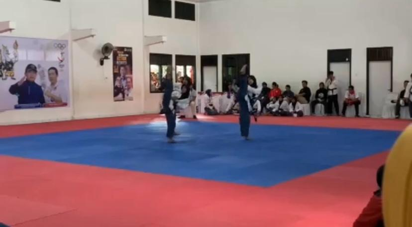

Resmi Dibuka, Kejurwil II Taekwondo Bengkulu Disambut Antusias Peserta
Turut dihadiri Wakil Walikota Bengkulu Dedy Wahyudi, Sekda Arif Gunadi, Kadispora Sutapa, Kadispora Provinsi Bengkulu dan tentunya Perwakilan Pengurus Taekwondo Indonesia. Kemudian Ketua Umum Pengurus Provinsi (Pengprov) Taekwondo Indonesia (TI) Provinsi Bengkulu Sefty Yuslinah, Ketua Pengurus Kota (Pengkot) Taekwondo Indonesia (TI) Bengkulu dan juga selaku anggota DPRD Teuku Zulkarnain dan tamu undangan lainnya. Event Kejurwil nasional ini diikuti sebanyak kurang lebih 900 peserta. baik dari Provinsi Bengkulu (tuan rumah, red), Provinsi Lampung, Provinsi Jambi dan Sumatera Selatan. Para peserta terlihat antusias dan siap menampilkan performa terbaik serta meraih juara pada kategori yang dilombakan Tak ingin kalah dari peserta, Walikota Helmi juga antusias menyambut Kejurwil dan perhelatan Piala Walikota di Kota Bengkulu tercinta. Helmi tampak senang para peserta begitu semangat.

Porprov XXIII Jambi Tahun 2023 Resmi Dibuka, Diharapkan Loloskan Atlet ke PON XXI/2024 Aceh-Sumut
Bertempat di Stadion Tri Lomba Juang KONI Provinsi Jambi pada malam hari tanggal 10 Juli 2023, Gubernur Al Haris membuka resmi Pekan Olahraga Provinsi (Porprov) XXIII Jambi Tahun 2023. Sekitar 5.500 atlet dari 9 Kabupaten dan 2 Kota di Jambi bertanding pada 40 Cabang olahraga (cabor).Gubernur Jambi terangkan bahwa Porprov sejatinya digelar sebelum tahun ini, namun pandemi Covid-19 memaksa pelaksanaannya mundur. Al Haris juga jelaskan dukungan pemerintah provinsi terhadap olahraga melalui rencana pembangunan stadion standar internasional di Muaro Jambi. Ketua Umum (Ketum) Komite Olahraga Nasional Indonesia (KONI) Pusat masa bakti 2023-2027 yang baru terpilih, Letjen TNI Purn Marciano Norman mengutus Mayjen TNI Purn Dr.Suwarno untuk hadir secara langsung. “Atas petunjuk Ketua Umum KONI Pusat, kami menyampaikan apresiasi kepada Bapak Gubernur dan jajarannya atas dukungan terhadap penyelenggaraan Porprov XXIII/2023 Jambi,” kata Suwarno. Adapun Porprov kali ini tuan rumahnya adalah Provinsi Jambi, bukan Kabupaten/Kota tertentu. Hal tersebut dilakukan pemerintah provinsi guna mempersiapkan atlet dengan baik pada Pekan Olahraga Nasional (PON) XXI Tahun 2024 di Aceh-Sumatera Utara. Melihat animo atlet yang besar, Suwarno sampaikan harapannya. “Dari 11 Kabupaten/kota, ada 4 Kabupaten/kota yang atletnya ratusan orang,” ujarnya. Suwarno berharap dari ratusan atlet yang mewakili Kabupaten/Kota pada Porprov tahun ini, ada perwakilan yang lolos babak kualifikasi sehingga dapat berlaga pada PON XXI Tahun 2024 di Aceh-Sumatera Utara.